Left is ground-truth, while right is fitted voxel
Left is ground-truth, while right is fitted point-cloud

Left is ground-truth, while right is fitted mesh
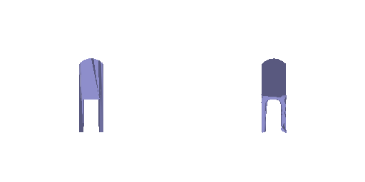
From left to right: RGB image, ground-truth rendered mesh, predicted rendered mesh
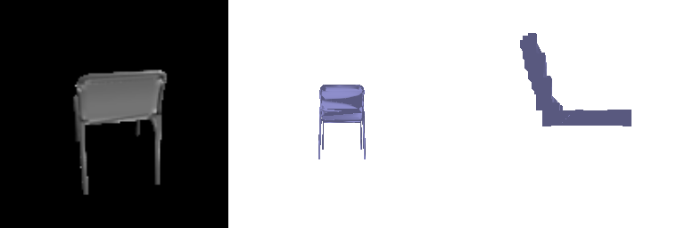
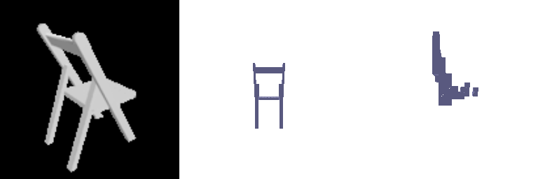

From left to right: RGB image, ground-truth rendered mesh, predicted rendered pointcloud


From left to right: RGB image, ground-truth rendered mesh, predicted rendered mesh
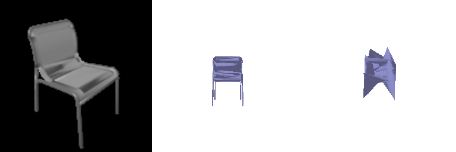


Final avg score: 51.1
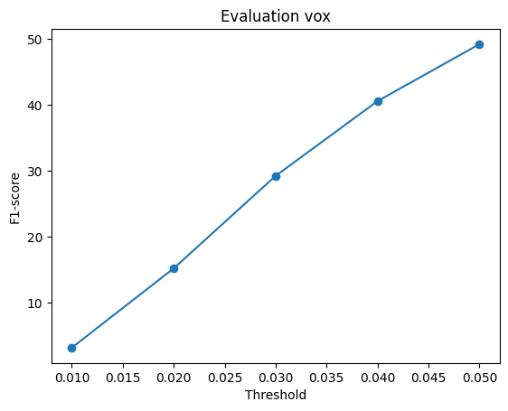
Final avg score: 75.65

Final avg score: 72.2
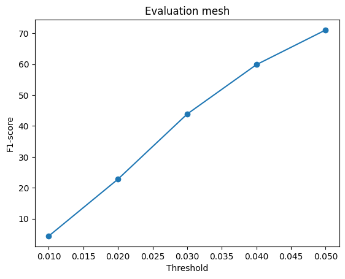
Explanation:
I varied the 'n_points' hyperparameter and analysed the the effects
| n_points | F1 Score | F1 plot | Gif@300 Image |
|---|---|---|---|
| 512 | 70.65 | 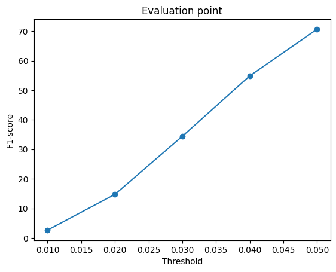 | 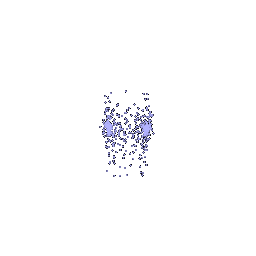 |
| 1000 | 75.66 | |
 |
| 2048 | 80.83 |  |
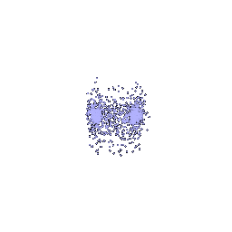 |
Analysis: As the number of points increases, the average F1 score improves because more samples help the model converge closer to the optimal result. However, this also increases GPU memory usage. The 1000-point model offers a balanced tradeoff between achieving a high F1 score and managing memory consumption.
To better understand precision, I visualized the nearest neighbors (k-NN) from the ground truth mesh to the predicted point cloud. Similarly, to gain insight into recall, I visualized the nearest neighbors from the predicted point cloud to the ground truth mesh. The GIFs below illustrate these visualizations:
From left to right:
The color gradient represents the distance error:
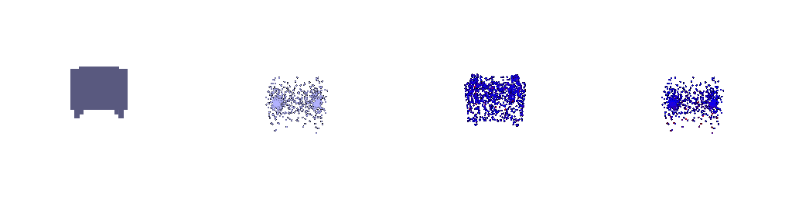
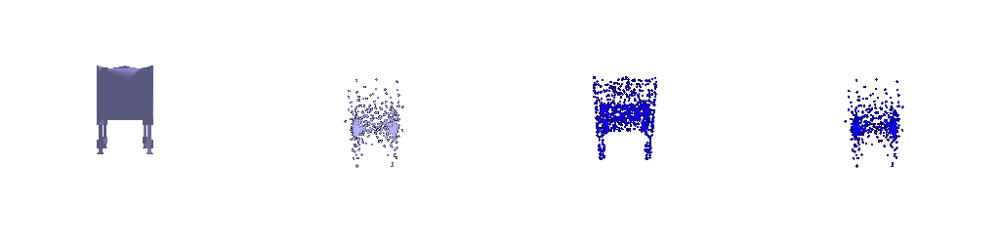
I trained the point-cloud decoder on the extended r2n2_shapenet_dataset model
From left to right: original Image, original Mesh, predicted point cloud
As shown in the third example, for the same chair class, the predicted point cloud appears more geometrically aligned with the original mesh. This suggests that the model learns the characteristics of a chair more effectively, likely due to the increased diversity in the training data.


Failure Example: The predicted mesh does not align with the original mesh. This discrepancy may stem from a lack of similar example images in the dataset, or it could indicate the need for a more complex model to better capture intricate geometric features.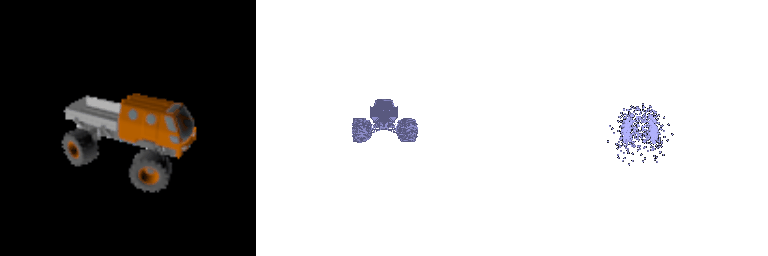
| Training Set | F1 Score | F1 plot |
|---|---|---|
| One class | 75.66 | |
| Three classes | 85.73 | 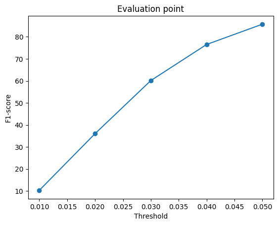 |
The average F1 score significantly increases to 85.73, indicating that the model learns more effectively about the object's general shape, resulting in a better fit. Greater class diversity enhances the model's ability to understand and represent each object more accurately.